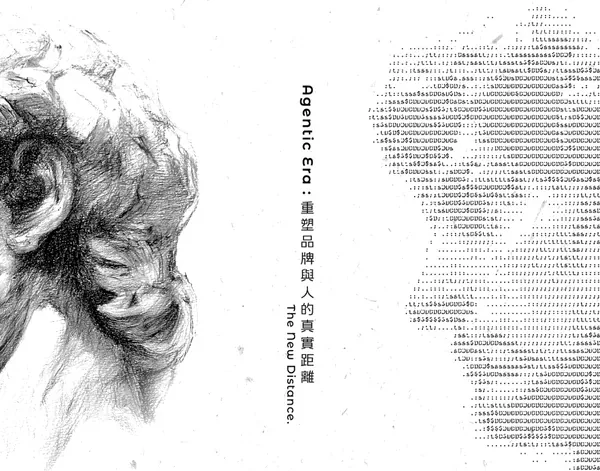
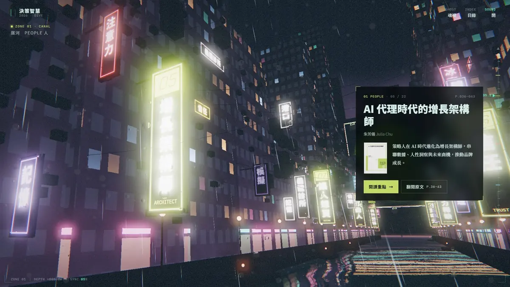
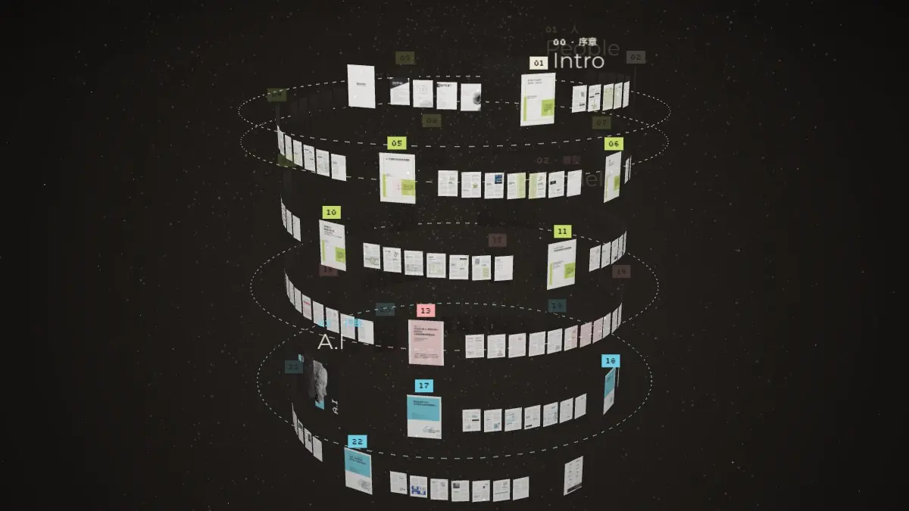
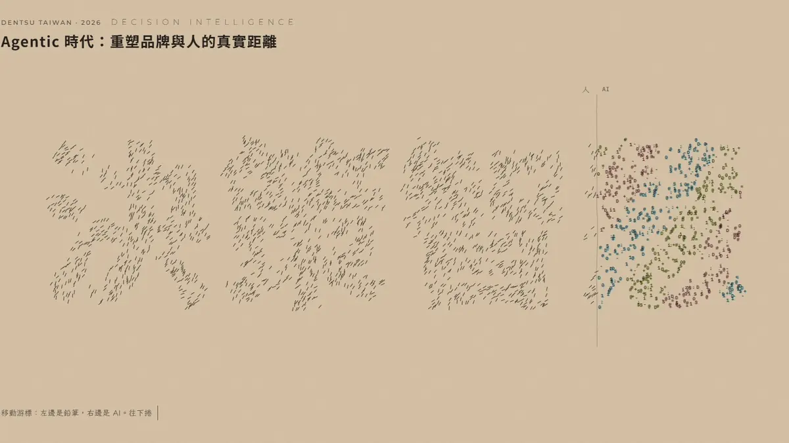

決策智慧 2026
Agentic Era：重塑品牌與人的真實距離The New Distance.
同一本書，四種距離。從遠遠地看，到一字一句地讀——挑一個你現在想站的位置。
22 篇觀點32 位作者原書 196 頁

選一個距離
-
01看
The New Distance影像版
四支短片走過序章、People、Model、A.I，最後是一張能打開 22 篇的光點地圖。游標所到之處，畫面化成字元。 進入影像版 → -

02潛DIVE3D 潛水
從雨夜的屋頂往下潛，經過運河、水下，到深網。22 篇觀點在不同深度等你，浮上來時拿到一張自己的魂紋。 開始潛入 → -

03翻螺旋書塔3D 書塔
書翻開，196 頁飛出來繞成一座塔。沿著螺旋一篇篇走，看重點摘要、翻原書，或俯瞰全景找主題線索。 走進書塔 → -

04讀CLOSER閱讀版
22 篇全文，每篇一張會跟著文字變化的手繪風動態圖。每讀完一篇，品牌與人就近一步。 開始閱讀 →